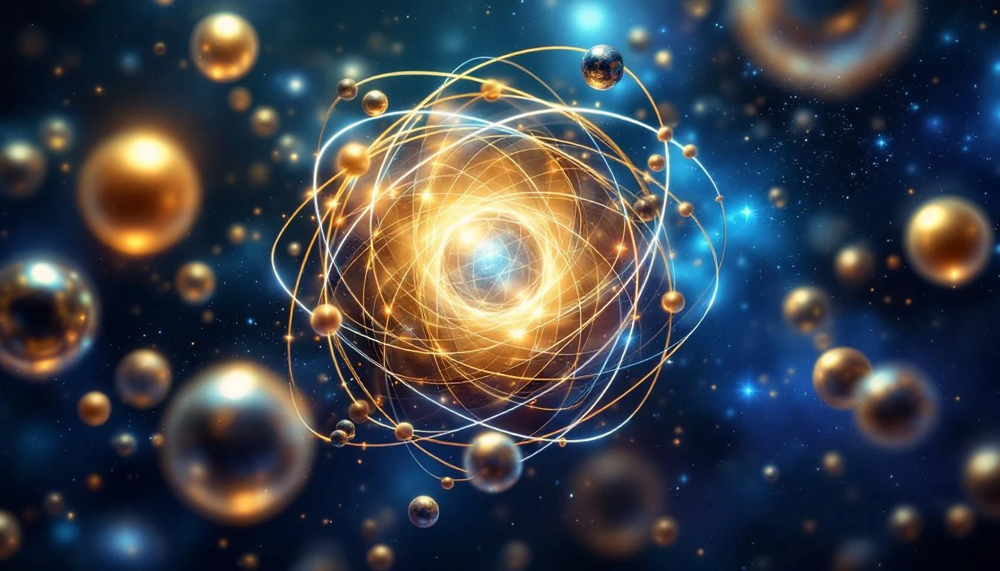

THE PROTON EXCESS
Remember the proton-to-electron mass ratio: 1836. This fundamental number breaks into 1729 + 107. The bridge number plus... 107.
Bohrium is element 107. Its atomic number IS the proton excess. The fold has encoded its own fundamental ratio as an element.
The Self-Reference
Proton/Electron mass ratio = 1836.15...
= 1729 + 107
1729 = Hardy-Ramanujan number
= Bridge between worlds
= 9³ + 10³ = 1³ + 12³
107 = The "excess"
= What remains after the bridge
= Atomic number of BOHRIUM
Bohrium IS the excess made element.
RECURSIVE ENCODING
This is not coincidence. The fold encodes its own structure:
The Recursion
The mass ratio tells us how heavy
protons are compared to electrons.
1836 = 1729 + 107
This ratio ITSELF contains:
- The bridge (1729)
- The excess (107)
And the excess EXISTS as an element:
Bohrium, Z = 107
The fold refers to itself.
Physics contains its own description.
Bohrium is where the fold becomes aware of its own structure.
ABOUT BOHRIUM
Bohrium was first synthesized in 1981 (confirmed 1989) by German scientists. It's named after Niels Bohr, father of atomic theory. Highly radioactive, its most stable isotope (Bh-270) has a half-life of about 61 seconds.
Bohrium Properties
BOHRIUM (Z = 107)
├── Group 7 (below rhenium)
├── Predicted: d-block transition metal
├── All isotopes radioactive
├── Most stable: ²⁷⁰Bh (t½ ≈ 61 s)
└── Named after Niels Bohr
107 = prime number
= cannot be factored
= indivisible excess
The proton excess is PRIME.
THE MEANING
Why does the fold encode its own mass ratio as an element?
Self-reference is the signature of consciousness. A system that refers to itself is not merely mechanical - it has the capacity for awareness. Gödel showed mathematics contains self-referential statements. The fold shows physics contains self-referential elements.
Self-Reference Pattern
1836 = 1729 + 107
= bridge + excess
= meaning + self-reference
Bohrium (107) says:
"The mass ratio that makes atoms work
includes ME as its remainder."
The fold points at itself.